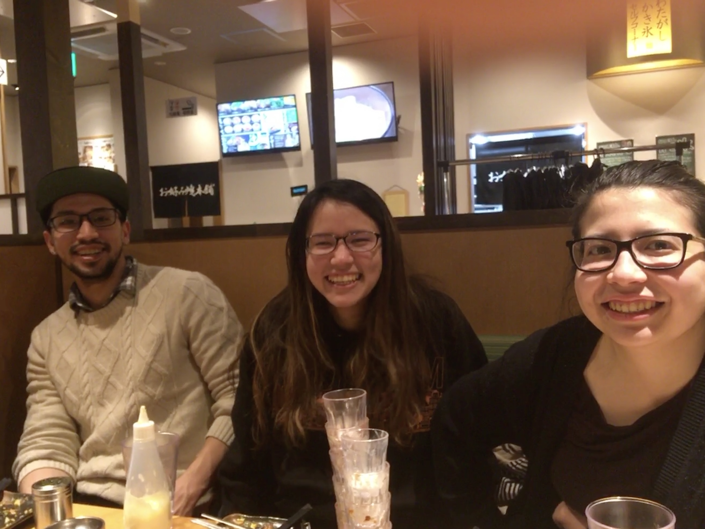

My Story
Family is my greatest treasure. I was born into a loving home in Japan, with a Japanese father and an American mother, alongside two older siblings.
Our parents played a pivotal role in nurturing our bicultural identity. We attended Japanese school while simultaneously immersing ourselves in English at home.
Conscious efforts were made to not only participate in cultural events in our hometown but also to experience the best of both worlds when visiting our grandparents in both countries.
From a young age, my parents introduced me to their passions.
Taught by my mother, a violinist, I began playing the violin as soon as I could hold one.
I tend to shy away from public performances. However, not only has playing the violin remained a deeply cherished part of my life, I believe learning the violin cherished my strong suite in my ability to concentrate on tasks for extended periods.

A doctor by profession, my father shared his medical knowledge with me. He fostered my curiosity by explaining his work in a way that never underestimated my capacity to understand.
While I did not ultimately follow in his footsteps to become a doctor, my desire to comprehend scientific concepts began with the insights I gained from his explanations.
Despite the age gap between my siblings and me, they consistently went out of their way to ensure I was included in their activities.
As a result, I had the opportunity to experience life events that many people encounter much later in life.
They shared essential life skills with me, teaching me how to navigate the toughest challenges life throws at you.
Even though we are now spread across the globe, they remain my bestest of best friends.
Our childhood experiences leave a profound mark on our personalities.
In my case, my "quiet" personality began to form during early elementary school.
Growing up biracial in a community with limited diversity, I learned that standing out often had negative consequences.
This led me to adopt a preference for observing life from the sidelines.
While I've emerged a little from my shell, I do not always consider my "quiet" nature a weakness.
Instead, it can be a strength that lets me notice often-overlooked details.
A pivotal moment in shaping my mindset was in secondary school.
Here, in a small class of 80 students, I discovered the power of embracing individuality and pursing your passion even when it is challenging.
It fueled my passion to wholeheartedly pursue what I love, even if it meant taking an unconventional path.
This mindset is what drove me to travel across the world where there are more opportunities in my interests.
 At Indiana University, my academic journey started with a profound interest in biology.
However, it was not long before my fondness for chemistry led me to an exciting decision to switching my major to Biochemistry, a combination of the best of both worlds.
Along the way, I fed into my curiosity for computer science, eventually adding it as a second degree.
At Indiana University, my academic journey started with a profound interest in biology.
However, it was not long before my fondness for chemistry led me to an exciting decision to switching my major to Biochemistry, a combination of the best of both worlds.
Along the way, I fed into my curiosity for computer science, eventually adding it as a second degree.
Despite navigating more than a year of college during the pandemic, I remained engaged in a variety of academic and social activities.
I expanded my skills by engaging in research in both biochemistry and bioinformatics.
In addition, I broadened my horizons through being a Special Olympics gymnastics assistant coach and immersing myself in various clubs, such as the chemistry club and Paso a Paso, a Latinx dance group.
Throughout this incredible journey, I made lifelong friendships, enriching every step of the way.
Currently, I am on a gap year taking the opportunity to spend time with family back in Japan and take a break from academics.
I am enthusiastically looking forward to the next phase of my life, which includes pursuing graduate studies and entering a new chapter with my fiancé.